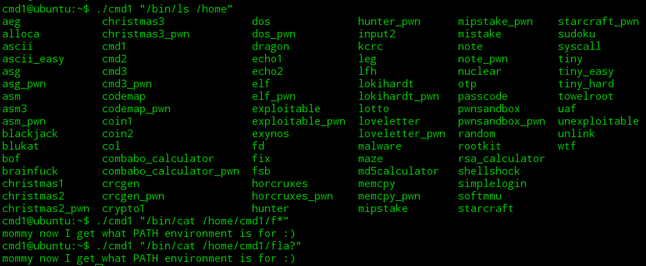

<!DOCTYPE html>
<html>
<head><meta name="generator" content="Hexo 3.9.0">
  <meta charset="utf-8">
  

  
  <title>14-cmd1 | Hexo</title>
  <meta name="viewport" content="width=device-width, initial-scale=1, maximum-scale=1">
  <meta name="description" content="知识补充:putenv()函数是改变环境变量的,所以更改了环境变量后,惯用的ls,cat等命令不能直接使用,但我们通过完整的路径来使用 *:/bin/cat;(实现cat功能)  14-cmd1 pwnable.kr首先还是链接服务器 获得源码ssh cmd1@pwnable.kr -p2222 pw:guest 12345678910111213141516#include &amp;lt;stdio">
<meta property="og:type" content="article">
<meta property="og:title" content="14-cmd1">
<meta property="og:url" content="http://yoursite.com/2019/05/22/14-cmd1/index.html">
<meta property="og:site_name" content="Hexo">
<meta property="og:description" content="知识补充:putenv()函数是改变环境变量的,所以更改了环境变量后,惯用的ls,cat等命令不能直接使用,但我们通过完整的路径来使用 *:/bin/cat;(实现cat功能)  14-cmd1 pwnable.kr首先还是链接服务器 获得源码ssh cmd1@pwnable.kr -p2222 pw:guest 12345678910111213141516#include &amp;lt;stdio">
<meta property="og:locale" content="en">
<meta property="og:image" content="http://yoursite.com/2019/05/22/14-cmd1/14-1.png">
<meta property="og:updated_time" content="2019-05-22T12:55:26.000Z">
<meta name="twitter:card" content="summary">
<meta name="twitter:title" content="14-cmd1">
<meta name="twitter:description" content="知识补充:putenv()函数是改变环境变量的,所以更改了环境变量后,惯用的ls,cat等命令不能直接使用,但我们通过完整的路径来使用 *:/bin/cat;(实现cat功能)  14-cmd1 pwnable.kr首先还是链接服务器 获得源码ssh cmd1@pwnable.kr -p2222 pw:guest 12345678910111213141516#include &amp;lt;stdio">
<meta name="twitter:image" content="http://yoursite.com/2019/05/22/14-cmd1/14-1.png">
  
    <link rel="alternate" href="/atom.xml" title="Hexo" type="application/atom+xml">
  
  
    <link rel="icon" href="/favicon.png">
  
  
    <link href="//fonts.googleapis.com/css?family=Source+Code+Pro" rel="stylesheet" type="text/css">
  
  <link rel="stylesheet" href="/css/style.css">
</head>
</html>
<body>
  <div id="container">
    <div id="wrap">
      <header id="header">
  <div id="banner"></div>
  <div id="header-outer" class="outer">
    <div id="header-title" class="inner">
      <h1 id="logo-wrap">
        <a href="/" id="logo">Hexo</a>
      </h1>
      
    </div>
    <div id="header-inner" class="inner">
      <nav id="main-nav">
        <a id="main-nav-toggle" class="nav-icon"></a>
        
          <a class="main-nav-link" href="/">Home</a>
        
          <a class="main-nav-link" href="/archives">Archives</a>
        
      </nav>
      <nav id="sub-nav">
        
          <a id="nav-rss-link" class="nav-icon" href="/atom.xml" title="RSS Feed"></a>
        
        <a id="nav-search-btn" class="nav-icon" title="Search"></a>
      </nav>
      <div id="search-form-wrap">
        <form action="//google.com/search" method="get" accept-charset="UTF-8" class="search-form"><input type="search" name="q" class="search-form-input" placeholder="Search"><button type="submit" class="search-form-submit">&#xF002;</button><input type="hidden" name="sitesearch" value="http://yoursite.com"></form>
      </div>
    </div>
  </div>
</header>
      <div class="outer">
        <section id="main"><article id="post-14-cmd1" class="article article-type-post" itemscope itemprop="blogPost">
  <div class="article-meta">
    <a href="/2019/05/22/14-cmd1/" class="article-date">
  <time datetime="2019-05-22T12:21:20.000Z" itemprop="datePublished">2019-05-22</time>
</a>
    
  </div>
  <div class="article-inner">
    
    
      <header class="article-header">
        
  
    <h1 class="article-title" itemprop="name">
      14-cmd1
    </h1>
  

      </header>
    
    <div class="article-entry" itemprop="articleBody">
      
        <blockquote>
<p>知识补充:putenv()函数是改变环境变量的,所以更改了环境变量后,惯用的ls,cat等命令不能直接使用,但我们通过完整的路径来使用 *:/bin/cat;(实现cat功能)</p>
</blockquote>
<h1 id="14-cmd1-pwnable-kr"><a href="#14-cmd1-pwnable-kr" class="headerlink" title="14-cmd1 pwnable.kr"></a>14-cmd1 pwnable.kr</h1><p>首先还是链接服务器 获得源码<br>ssh <a href="mailto:cmd1@pwnable.kr" target="_blank" rel="noopener">cmd1@pwnable.kr</a> -p2222 pw:guest</p>
<figure class="highlight plain"><table><tr><td class="gutter"><pre><span class="line">1</span><br><span class="line">2</span><br><span class="line">3</span><br><span class="line">4</span><br><span class="line">5</span><br><span class="line">6</span><br><span class="line">7</span><br><span class="line">8</span><br><span class="line">9</span><br><span class="line">10</span><br><span class="line">11</span><br><span class="line">12</span><br><span class="line">13</span><br><span class="line">14</span><br><span class="line">15</span><br><span class="line">16</span><br></pre></td><td class="code"><pre><span class="line">#include &lt;stdio.h&gt;</span><br><span class="line">#include &lt;string.h&gt;</span><br><span class="line"></span><br><span class="line">int filter(char* cmd)&#123;</span><br><span class="line">	int r=0;</span><br><span class="line">	r += strstr(cmd, &quot;flag&quot;)!=0;</span><br><span class="line">	r += strstr(cmd, &quot;sh&quot;)!=0;</span><br><span class="line">	r += strstr(cmd, &quot;tmp&quot;)!=0;</span><br><span class="line">	return r;</span><br><span class="line">&#125;</span><br><span class="line">int main(int argc, char* argv[], char** envp)&#123;</span><br><span class="line">	putenv(&quot;PATH=/thankyouverymuch&quot;);</span><br><span class="line">	if(filter(argv[1])) return 0;</span><br><span class="line">	system( argv[1] );</span><br><span class="line">	return 0;</span><br><span class="line">&#125;</span><br></pre></td></tr></table></figure>

<p>这里main函数中定义了三个变量 其中第三个参数定义有关环境变量的envp 在函数中putenv正好是改变环境变量的 所以需要利用完整的路径去实现不能用的cat功能</p>
<ul>
<li>strstr(str1,str2)函数用于判断字符串str2是否是str1的子串 如果是,则该函数返回str2在str1中首次出现的地址;否则,返回NULL</li>
</ul>
<p>在另外一个函数中filter中定义的是main函数中的第二个变量argv[]<br>函数中写了它不能是flag sh tmp 所以也就是实现了过滤了这三个参数<br>所以直接输入./cmd1 “/bin/cat /home/cmd1/flag”是不可以的 要拿通配符替换掉后面第二个参数”/home/cmd1/flag”</p>
<ul>
<li>这里还有知识补充:在linux操作系统中 有通配符的概念 通配符的作用有很多 这里用到的是代表任意字符(不限个数)的* 和代表一个字符的?</li>
</ul>
<p>所以这里应该输入:<br>./cmd1 “/bin/cat *”或者./cmd1 “/bin/cat /home/cmd1/f*”或者./cmd1 “/bin/cat /home/cmd1/fla?”(这里改成f***都是可以的)<br></p>
<figure class="highlight plain"><table><tr><td class="gutter"><pre><span class="line">1</span><br><span class="line">2</span><br><span class="line">3</span><br><span class="line">4</span><br><span class="line">5</span><br><span class="line">6</span><br><span class="line">7</span><br><span class="line">8</span><br><span class="line">9</span><br><span class="line">10</span><br><span class="line">11</span><br><span class="line">12</span><br><span class="line">13</span><br><span class="line">14</span><br><span class="line">15</span><br><span class="line">16</span><br><span class="line">17</span><br><span class="line">18</span><br><span class="line">19</span><br><span class="line">20</span><br><span class="line">21</span><br><span class="line">22</span><br><span class="line">23</span><br><span class="line">24</span><br><span class="line">25</span><br><span class="line">26</span><br><span class="line">27</span><br><span class="line">28</span><br><span class="line">29</span><br><span class="line">30</span><br><span class="line">31</span><br><span class="line">32</span><br><span class="line">33</span><br></pre></td><td class="code"><pre><span class="line">常见的通配符:</span><br><span class="line">* - 通配符,代表任意字符(0到多个)</span><br><span class="line">? - 通配符,代表一个字符</span><br><span class="line"># - 注释</span><br><span class="line">/ - 跳转符号,将特殊字符或通配符还原成一般符号</span><br><span class="line">| - 分隔两个管线命令的界定</span><br><span class="line">; - 连续性命令的界定</span><br><span class="line">~ - 用户的根目录</span><br><span class="line">$ - 变量前需要加的变量值</span><br><span class="line">! - 逻辑运算中的&quot;非&quot;(not)</span><br><span class="line">/ - 路径分隔符号</span><br><span class="line">&gt;, &gt;&gt; - 输出导向,分别为&quot;取代&quot;与&quot;累加&quot;</span><br><span class="line">&apos; - 单引号,不具有变量置换功能</span><br><span class="line">&quot; - 双引号,具有变量置换功能</span><br><span class="line">` - quote符号,两个``中间为可以先执行的指令</span><br><span class="line">() - 中间为子shell的起始与结束</span><br><span class="line">[] - 中间为字符组合</span><br><span class="line">&#123;&#125; - 中间为命令区块组合</span><br><span class="line">Ctrl+C - 终止当前命令</span><br><span class="line">Ctrl+D - 输入结束(EOF),例如邮件结束的时候</span><br><span class="line">Ctrl+M - 就是Enter</span><br><span class="line">Ctrl+S - 暂停屏幕的输出</span><br><span class="line">Ctrl+Q - 恢复屏幕的输出</span><br><span class="line">Ctrl+U - 在提示符下,将整行命令删除</span><br><span class="line">Ctrl+Z - 暂停当前命令</span><br><span class="line">&amp;&amp; - 当前一个指令执行成功时,执行后一个指令</span><br><span class="line">|| - 当前一个指令执行失败时,执行后一个指令</span><br><span class="line">其中最常用的是＊、？、［］和 ‘。下面举几个简单的例子：</span><br><span class="line">1，ls test*             &lt;== *表示后面不论接几个字符都接受（没有字符也接受）</span><br><span class="line">2，ls test?            &lt;== ?表示后面当且仅当接一个字符时才接受</span><br><span class="line">3，ls test???       &lt;== ???表示一定要接三个字符</span><br><span class="line">4，cp  test[1~5]  /tmp      &lt;== test1, test2, test3, test4, test5若存在，则复制到/tmp目录下</span><br><span class="line">5，cd  /lib/modules/&apos; uname  -r&apos;/kernel/drivers        &lt;== 被 &apos; &apos; 括起来的命令先执行</span><br></pre></td></tr></table></figure>
      
    </div>
    <footer class="article-footer">
      <a data-url="http://yoursite.com/2019/05/22/14-cmd1/" data-id="ck0ag4lfv0001h7thym0iweug" class="article-share-link">Share</a>
      
      
    </footer>
  </div>
  
    
<nav id="article-nav">
  
    <a href="/2019/05/30/reverse-xctf/" id="article-nav-newer" class="article-nav-link-wrap">
      <strong class="article-nav-caption">Newer</strong>
      <div class="article-nav-title">
        
          reverse-xctf
        
      </div>
    </a>
  
  
    <a href="/2019/05/20/10-shell/" id="article-nav-older" class="article-nav-link-wrap">
      <strong class="article-nav-caption">Older</strong>
      <div class="article-nav-title">10-shell</div>
    </a>
  
</nav>

  
</article>

</section>
        
          <aside id="sidebar">
  
    

  
    

  
    
  
    
  <div class="widget-wrap">
    <h3 class="widget-title">Archives</h3>
    <div class="widget">
      <ul class="archive-list"><li class="archive-list-item"><a class="archive-list-link" href="/archives/2019/07/">July 2019</a></li><li class="archive-list-item"><a class="archive-list-link" href="/archives/2019/06/">June 2019</a></li><li class="archive-list-item"><a class="archive-list-link" href="/archives/2019/05/">May 2019</a></li></ul>
    </div>
  </div>


  
    
  <div class="widget-wrap">
    <h3 class="widget-title">Recent Posts</h3>
    <div class="widget">
      <ul>
        
          <li>
            <a href="/2019/07/17/shark-reverse-2/">shark-reverse-2</a>
          </li>
        
          <li>
            <a href="/2019/07/15/C-反汇编与逆向分析学习笔记/">C++反汇编与逆向分析学习笔记</a>
          </li>
        
          <li>
            <a href="/2019/07/12/easy-KeygenMe/">easy_KeygenMe</a>
          </li>
        
          <li>
            <a href="/2019/07/11/reversing-kr-easy-crack/">reversing.kr-easy_crack</a>
          </li>
        
          <li>
            <a href="/2019/07/09/tips/">tips</a>
          </li>
        
      </ul>
    </div>
  </div>

  
</aside>
        
      </div>
      <footer id="footer">
  
  <div class="outer">
    <div id="footer-info" class="inner">
      &copy; 2019 John Doe<br>
      Powered by <a href="http://hexo.io/" target="_blank">Hexo</a>
    </div>
  </div>
</footer>
    </div>
    <nav id="mobile-nav">
  
    <a href="/" class="mobile-nav-link">Home</a>
  
    <a href="/archives" class="mobile-nav-link">Archives</a>
  
</nav>
    

<script src="//ajax.googleapis.com/ajax/libs/jquery/2.0.3/jquery.min.js"></script>


  <link rel="stylesheet" href="/fancybox/jquery.fancybox.css">
  <script src="/fancybox/jquery.fancybox.pack.js"></script>


<script src="/js/script.js"></script>


  </div>
</body>
</html>